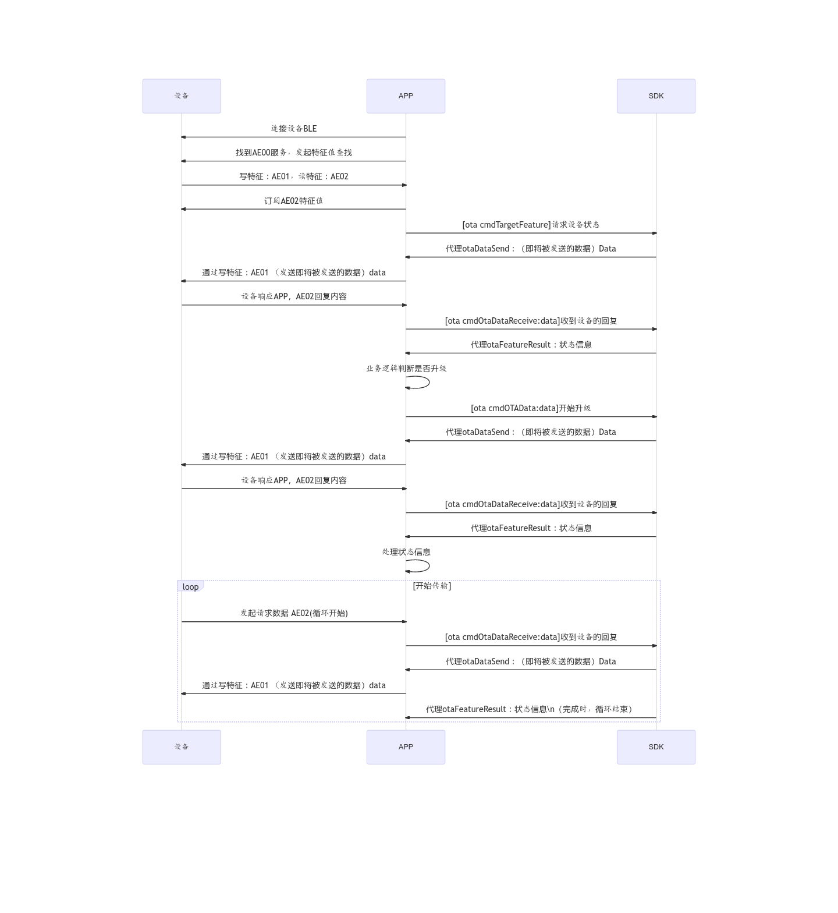

2.使用自定义的蓝牙连接API进行OTA
2.1. JL_OTALib工作时序
{kind=link}

参考Demo：「JL_OTA项目的BleManager文件夹」
支持的功能：
BLE设备握手连接；
获取设备信息；
OTA升级能实现；
用到的库和相关类：
用到的库：
JL_OTALib.xcframework —-OTA升级业务库
JL_AdvParse.xcframework——杰理蓝牙设备广播包解析业务库
JL_HashPair.xcframework——设备认证业务库
JLLogHelper.xcframework——日志打印业务库
重要
在OTA过程中不允许进行其他命令的交互
相关类说明： JL_OTAManager： OTA升级业务管理类
获取设备信息（是否需要升级/强制升级）
cmdTargetFeature
设备端发过来的数据解析接口
cmdOTADataReceive：
请求进入loader状态,需要携带升数据bfu
cmdOTAData：Result：
进行数据传输（进入loader，重连后需要再次调用）
cmdOTAData：Result：
重启设备命令
cmdRebootDevice
JLHashHandler： 设备认证业务类
JL_AdvParse： 广播包内容解析类
BLE特征参数
【服务号】 ：AE00
【写】特征值 ：AE01
【读 】特征值 ：AE02
2.2. 初始化SDK
1@interface JLBleManager() <JL_OTAManagerDelegate,JLHashHandlerDelegate>
2@property (strong, nonatomic) JLHashHandler *pairHash;
3
4@end
5- (instancetype)init {
6 self = [super init];
7 if (self) {
8 _otaManager = [[JL_OTAManager alloc] init];
9 _otaManager.delegate = self;
10 self.pairHash = [[JLHashHandler alloc] init];
11 self.pairHash.delegate = self;
12
13 [JL_OTAManager logSDKVersion];
14 [JLHashHandler sdkVersion];
15 }
16 return self;
17}
2.3. BLE设备特征回调
1#pragma mark 设备特征回调
2- (void)peripheral:(CBPeripheral *)peripheral didDiscoverCharacteristicsForService:(CBService *)service error:(nullable NSError *)error {
3 if (error) { NSLog(@"Err: Discovered Characteristics fail."); return; }
4
5 if ([service.UUID.UUIDString isEqual:FLT_BLE_SERVICE]) {
6
7 for (CBCharacteristic *character in service.characteristics) {
8 /*--- RCSP ---*/
9 if ([character.UUID.UUIDString isEqual:FLT_BLE_RCSP_W]) {
10 NSLog(@"BLE Get Rcsp(Write) Channel ---> %@",character.UUID.UUIDString);
11 self.mRcspWrite = character;
12 }
13
14 if ([character.UUID.UUIDString isEqual:FLT_BLE_RCSP_R]) {
15 NSLog(@"BLE Get Rcsp(Read) Channel ---> %@",character.UUID.UUIDString);
16 self.mRcspRead = character;
17 [peripheral setNotifyValue:YES forCharacteristic:character];
18
19 if(self.mRcspRead.properties == CBCharacteristicPropertyRead){
20 [peripheral readValueForCharacteristic:character];
21 NSLog(@"BLE Rcsp(Read) Read Value For Characteristic.");
22 }
23 }
24 }
25 }
26}
2.4. BLE更新通知特征的状态
1#pragma mark 更新通知特征的状态
2- (void)peripheral:(CBPeripheral *)peripheral didUpdateNotificationStateForCharacteristic:(nonnull CBCharacteristic *)characteristic error:(nullable NSError *)error {
3
4 if (error) { NSLog(@"Err: Update NotificationState For Characteristic fail."); return; }
5
6 if ([characteristic.service.UUID.UUIDString isEqual:FLT_BLE_SERVICE] &&
7 [characteristic.UUID.UUIDString isEqual:FLT_BLE_RCSP_R] &&
8 characteristic.isNotifying == YES)
9 {
10
11 __weak typeof(self) weakSelf = self;
12 self.bleMtu = [peripheral maximumWriteValueLengthForType:CBCharacteristicWriteWithoutResponse];
13 NSLog(@"BLE ---> MTU:%lu",(unsigned long)self.bleMtu);
14 if (self.isPaired == YES) {
15 [_pairHash hashResetPair];
16 dispatch_after(dispatch_time(DISPATCH_TIME_NOW, (int64_t)(0.3 * NSEC_PER_SEC)), dispatch_get_main_queue(), ^{
17 //设备认证
18 [self->_pairHash bluetoothPairingKey:self.pairKey Result:^(BOOL ret) {
19 if(ret){
20 weakSelf.lastUUID = peripheral.identifier.UUIDString;
21 weakSelf.lastBleMacAddress = nil;
22 [[NSNotificationCenter defaultCenter] postNotificationName:kFLT_BLE_PAIRED object:peripheral];
23 [weakSelf.otaManager noteEntityConnected];
24 weakSelf.pairStatus = YES;
25 }else{
26 NSLog(@"JL_Assist Err: bluetooth pairing fail.");
27 [weakSelf.bleManager cancelPeripheralConnection:peripheral];
28 }
29 }];
30 });
31 }else{
32 self.lastUUID = peripheral.identifier.UUIDString;
33 self.lastBleMacAddress = nil;
34 [[NSNotificationCenter defaultCenter] postNotificationName:kFLT_BLE_PAIRED object:peripheral];
35 [self.otaManager noteEntityConnected];
36 }
37 }
38 self.isConnected = YES;
39}
2.5. BLE设备返回的数据
设备端返回的数据需要放入到SDK中解析，其中 设备认证部分 和 通讯部分 的处理是分开的
#pragma mark 设备返回的数据 GET
- (void)peripheral:(CBPeripheral *)peripheral didUpdateValueForCharacteristic:(CBCharacteristic *)characteristic error:(NSError *)error {
if (error) { NSLog(@"Err: receive data fail."); return; }
if(_isPaired == YES && _pairStatus == NO){
//收到设备的认证交互数据
[_pairHash inputPairData:characteristic.value];
}else{
//收到的设备数据，正常通讯数据
[_otaManager cmdOtaDataReceive:characteristic.value];
}
}
2.6. BLE设备断开连接
#pragma mark 设备断开连接
- (void)centralManager:(CBCentralManager *)central didDisconnectPeripheral:(CBPeripheral *)peripheral error:(nullable NSError *)error {
NSLog(@"BLE Disconnect ---> Device %@ error:%d", peripheral.name, (int)error.code);
[_otaManager noteEntityDisconnected];
self.isConnected = NO;
self.pairStatus = NO;
/*--- UI刷新，设备断开 ---*/
[[NSNotificationCenter defaultCenter] postNotificationName:kFLT_BLE_DISCONNECTED object:peripheral];
}
2.7. 手机蓝牙状态更新
1//外部蓝牙，手机蓝牙状态回调处，实现以下：
2#pragma mark - 蓝牙初始化 Callback
3- (void)centralManagerDidUpdateState:(CBCentralManager *)central
4{
5_mBleManagerState = central.state;
6
7 if (_mBleManagerState != CBManagerStatePoweredOn) {
8 self.mBlePeripheral = nil;
9 self.blePeripheralArr = [NSMutableArray array];
10 }
11}
2.8. 获取设备信息
BLE连接且配对后必须执行一次
1 [_otaManager cmdTargetFeature];
2.9. 固件OTA升级
升级流程：连接设备 → 获取设备信息（见 2.8）→ 调用下面的接口发起升级。升级过程中通过 Result 回调返回进度与状态；其中 单备份升级 在设备下载 Loader 并重启后会出现 BLE 断开与 回连，相关逻辑详见本文档 2.14 节。
1/**
2* ota升级
3* @param otaFilePath ota升级文件路径
4*/
5- (void)otaFuncWithFilePath:(NSString *)otaFilePath {
6 NSLog(@"current otaFilePath ---> %@", otaFilePath);
7 self.selectedOtaFilePath = otaFilePath;
8 NSData *otaData = [[NSData alloc] initWithContentsOfFile:otaFilePath];
9
10 [_otaManager cmdOTAData:otaData Result:^(JL_OTAResult result, float progress) {
11 for (id<JLBleManagerOtaDelegate> objc in self.delegates) {
12 if([objc respondsToSelector:@selector(otaProgressWithOtaResult:withProgress:)]){
13 [objc otaProgressWithOtaResult:result withProgress:progress];
14 }
15 }
16
17 }];
18}
2.10. 取消固件OTA升级
1- (void)otaFuncCancel:(CANCEL_CALLBACK _Nonnull)result{
2
3 [_otaManager cmdOTACancelResult:^(uint8_t status, uint8_t sn, NSData * _Nullable data) {
4 result(status);
5 }];
6}
2.11. OTAManager 的delegate回调处理
1//MARK: - ota manager delegate callback
2
3///取消升级回调
4-(void)otaCancel{
5 //TODO: 取消OTA升级回调
6}
7
8///升级状态进度回调
9-(void)otaUpgradeResult:(JL_OTAResult)result Progress:(float)progress{
10 //TODO: 设备升级过程回调，包括进度状态
11}
12
13///即将发送给设备的数据
14-(void)otaDataSend:(NSData *)data{
15 //TODO: 开发者需要在这里要把数据发送到设备
16 [self writeDataByCbp:data];
17}
18///设备信息回调
19-(void)otaFeatureResult:(JL_OTAManager *)manager{
20
21 NSLog(@"getDeviceInfo:%d",__LINE__);
22 if (manager.otaStatus == JL_OtaStatusForce) {
23 NSLog(@"---> 进入强制升级.");
24 if (self.selectedOtaFilePath) {
25 [self otaFuncWithFilePath:self.selectedOtaFilePath];
26 } else {
27 _getCallback(true);
28 }
29 return;
30 } else {
31 if (manager.otaHeadset == JL_OtaHeadsetYES) {
32 NSLog(@"---> 进入强制升级: OTA另一只耳机.");
33 if (self.selectedOtaFilePath) {
34 [self otaFuncWithFilePath:self.selectedOtaFilePath];
35 } else {
36 _getCallback(true);
37 }
38 return;
39 }
40 }
41 NSLog(@"---> 设备正常使用...");
42 dispatch_async(dispatch_get_main_queue(), ^{
43 /*--- 获取公共信息 ---*/
44 [self->_otaManager cmdSystemFunction];
45 self->_getCallback(false);
46 });
47
48}
2.12. 设备认证的delegate回调
1//MARK: - Hash pair delegate callback
2///即将发送到设备的认证数据
3-(void)hashOnPairOutputData:(NSData *)data{
4//TODO: 开发者需要在这里要把数据发送到设备
5[self writeDataByCbp:data];
6}
2.13. 数据发送
iOS设备与固件通讯之间的最大MTU需要在连上后获取
1elf.bleMtu = [peripheral maximumWriteValueLengthForType:CBCharacteristicWriteWithoutResponse];
发送到设备的数据需要进行分包发送
代码参考如下：
1//MARK: - data send manager
2
3/// 需要分包发送
4/// - Parameter data: 数据
5-(void)writeDataByCbp:(NSData *)data{
6 // NSLog(@"%s:data:%@",__func__,data);
7 if (_mBlePeripheral && self.mRcspWrite) {
8 if (data.length > 0 ) {
9 NSInteger len = data.length;
10 while (len>0) {
11 if (len <= _bleMtu) {
12 NSData *mtuData = [data subdataWithRange:NSMakeRange(0, data.length)];
13 [_mBlePeripheral writeValue:mtuData
14 forCharacteristic:self.mRcspWrite
15 type:CBCharacteristicWriteWithoutResponse];
16 len -= data.length;
17 }else{
18 NSData *mtuData = [data subdataWithRange:NSMakeRange(0, _bleMtu)];
19 [_mBlePeripheral writeValue:mtuData
20 forCharacteristic:self.mRcspWrite
21 type:CBCharacteristicWriteWithoutResponse];
22 len -= _bleMtu;
23 data = [data subdataWithRange:NSMakeRange(_bleMtu, len)];
24 }
25 }
26 }
27 }else{
28 //需要先赋值写特征的内容
29 NSLog(@"need to init");
30 }
31}
2.14. OTA单备份回连
单备份（JL_PartitionSingle）固件设备的 OTA 升级与双备份不同：升级时设备需要先下载 BootLoader（Loader），下载完成后设备会重启进入 Loader 模式，此时 BLE 连接断开，必须重新扫描连接设备（回连），再继续传输剩余的升级数据。双备份设备升级时不会断开，无需回连。
升级过程中是否需要回连，由 JL_OTAResult 回调中的以下状态触发：
JL_OTAResultReconnect(0x09)：需要回连，使用设备 UUID 定位；JL_OTAResultReconnectWithMacAddr(0xfc)：需要回连，使用杰理广播包中的 MAC 地址定位（需JL_AdvParse）；JL_OTAResultReconnectUpdateSource(0xfe)：需要回连（资源升级场景）；JL_OTAResultDisconnect(0xfd)：OTA 过程中设备断开。
SDK 在升级流程中会根据设备能力自动判断回连的定位方式，并写入 JL_OTAManager.otaReconnectType：
1typedef NS_ENUM(UInt8, JL_OTAReconnectType) {
2 JL_OTAReconnectTypeUUID = 0x00, // OTA升级回连使用 UUID
3 JL_OTAReconnectTypeMACAddr = 0x01, // OTA升级回连使用 MAC 地址
4};
同时可通过 - (BOOL)cmdOtaIsRelinking 查询当前是否正处于回连状态。
针对自定义 BLE 接入（本文档场景），杰理提供两种回连实现方式，详见下文。
2.14.1. 方式一：外部回连（自行实现回连）
适用于由开发者完全管理蓝牙连接的场景（对应 Demo 的 BleManager 方案）：SDK 只负责 OTA 升级状态机，断线回连由开发者自行完成。
回连时序：
连接设备并完成握手（见 2.3、2.4），执行
cmdTargetFeature获取设备信息（见 2.8）；调用
cmdOTAData:Result:发起升级（见 2.9）；设备下载完 Loader 后重启断开，SDK 在升级回调中抛出
JL_OTAResultReconnect/JL_OTAResultReconnectWithMacAddr；开发者读取
otaReconnectType判断回连方式，自行扫描连接设备（UUID 或 MAC）；回连并配对成功后（见 2.4，SDK 已收到
noteEntityConnected），执行cmdTargetFeature重新获取设备信息；设备信息通过
otaFeatureResult:回调返回（见 2.11），确认设备仍处于升级状态后，调用cmdOtaDataIIResult:续传数据，直至升级完成。
升级状态回调中处理回连（对应 2.11 的 otaUpgradeResult:Progress:）：
1-(void)otaUpgradeResult:(JL_OTAResult)result Progress:(float)progress{
2 if (result == JL_OTAResultReconnect ||
3 result == JL_OTAResultReconnectWithMacAddr) {
4 // 单备份升级：设备重启进入 Loader，需要回连
5 JL_OTAReconnectType type = _otaManager.otaReconnectType;
6 if (type == JL_OTAReconnectTypeMACAddr) {
7 // MAC 方式：用设备 MAC 地址扫描并回连（需 JL_AdvParse 解析广播包）
8 [self reconnectWithMacAddress:_otaManager.bleAddr];
9 } else {
10 // UUID 方式：用上次连接的 UUID 重新连接
11 [self reconnectWithUUID:self.lastUUID];
12 }
13 } else if (result == JL_OTAResultUpgrading) {
14 // 正在升级，progress 为进度
15 } else if (result == JL_OTAResultSuccess) {
16 // 升级成功
17 } else if (result == JL_OTAResultReboot) {
18 // 设备重启
19 }
20}
其中 reconnectWithMacAddress: / reconnectWithUUID: 为开发者基于自己的 CBCentralManager 实现（可参考 Demo 中 JLBleManager 的 connectPeripheralWithUUID: 等连接方法）。
回连成功并重新获取设备信息后，续传升级数据：
1// 回连、配对完成后（见 2.4，SDK 已收到 noteEntityConnected），重新获取设备信息
2[_otaManager cmdTargetFeature];
3
4// 设备信息通过 delegate 的 otaFeatureResult: 返回，在其中判断并续传：
5-(void)otaFeatureResult:(JL_OTAManager *)manager{
6 if (manager.otaStatus == JL_OtaStatusForce) {
7 // 回连后设备仍处于升级状态（强制升级），续传剩余升级数据
8 [_otaManager cmdOtaDataIIResult:^(JL_OTAResult result, float progress) {
9 // 处理后续升级状态（进度、成功、失败等）
10 }];
11 }
12}
重要
cmdOtaDataIIResult:会复用上一次cmdOTAData:传入的升级数据，从断点继续传输；若升级数据已被清空，需重新调用cmdOTAData:Result:。回连成功后 必须 重新执行一次
cmdTargetFeature，SDK 需要据此重新协商升级状态；设备断开时请照常调用
noteEntityDisconnected（见 2.6），SDK 内部会根据回连状态决定是否抛出回连回调；MAC 地址回连依赖
JL_AdvParse解析广播包；未导入该库时只能使用 UUID 方式回连。
2.14.2. 方式二：SDK 内置回连
若不想自行实现回连，可使用 cmdUpgrade:Option:Result: 接口：SDK 内部通过 JLOtaReConnectMgr 自动完成“扫描 → 连接 → 认证 → 查询设备信息 → 续传”的完整回连过程，开发者无需参与蓝牙操作。
1- (void)otaFuncWithFilePathInner:(NSString *)otaFilePath {
2 NSData *otaData = [[NSData alloc] initWithContentsOfFile:otaFilePath];
3
4 // 1. 配置回连选项（默认值即可，按需调整）
5 JLOtaReConnectOption *option = [JLOtaReConnectOption defaultOption];
6 option.deviceAuthorize = YES; // 是否需要设备认证（握手），需 JL_HashPair，默认 YES
7 option.serviceUUID = @"AE00"; // 服务 UUID，默认 AE00
8 option.writeUUID = @"AE01"; // 写特征 UUID，默认 AE01
9 option.readUUID = @"AE02"; // 读特征 UUID，默认 AE02
10 option.authKey = nil; // 握手配对秘钥，默认 nil
11 option.isWriteWithResponse = NO; // 是否带响应写，默认 NO
12
13 // 2. 内置回连升级：升级状态只能通过 Result 回调获取
14 [_otaManager cmdUpgrade:otaData Option:option Result:^(JL_OTAResult result, float progress) {
15 if (result == JL_OTAResultUpgrading) {
16 // 正在升级
17 } else if (result == JL_OTAResultSuccess) {
18 // 升级成功
19 } else if (result == JL_OTAResultReboot) {
20 // 设备重启
21 } else {
22 // 其余错误码见 JL_OTAResult
23 }
24 }];
25}
警告
使用
cmdUpgrade:Option:Result:时，升级状态 只能 通过Result回调获取，不可使用JL_OTAManagerDelegate的代理回调（otaUpgradeResult:Progress:）。option传nil时，SDK 内部使用[JLOtaReConnectOption defaultOption]默认配置。SDK 内置回连会创建独立的蓝牙中心完成扫描/连接，回连期间开发者 不要 再用自己的蓝牙对象连接同一设备，避免连接冲突。
内置回连依赖
JL_HashPair（设备认证）与JL_AdvParse（MAC 地址回连）；未导入对应库时相关能力不可用，SDK 会输出 warning 日志。
2.14.3. 相关接口速查
- (void)cmdOTAData:Result:：发起 OTA 升级（公版流程，回连需外部处理）；- (void)cmdOtaDataIIResult:：单备份升级特有，回连成功后再次发起升级（续传）；- (void)cmdUpgrade:Option:Result:：单备份升级特有，SDK 内部自动回连；- (BOOL)cmdOtaIsRelinking：查询是否正在回连；@property JL_OTAReconnectType otaReconnectType：回连方式（SDK 自动判断并写入）；JLOtaReConnectOption：回连选项；JLOtaReConnectMgr：SDK 内部回连管理器（一般无需直接使用）。
参考 Demo ：JL_OTA 工程的 BleManager 文件夹，JLBleManager 提供 otaFuncWithFilePath: （外部回连流程）与 otaFuncWithFilePathInner: （SDK 内置回连流程）两个升级入口。